Open-licence provider originals with EXIF-corrected display copies. Observation photographs are not vouchers, and a voucher image may show only its label. No photograph here supports identification, diagnosis or consumption. Publication HOLD.
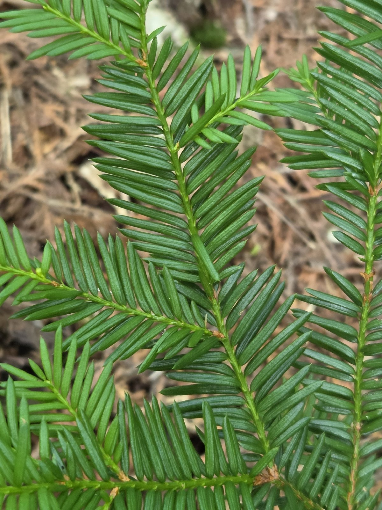
W2C-PH-001 · Taxus canadensis Marshall
Pages Z05-P42 · Record Research-grade iNaturalist observation photograph via GBIF (community-verified identification; observation, not a voucher)
Visible Several twigs with flat, dark green needles attached singly and spread in two flat ranks; no aril visible; no scale.
Missing views Paired Pinus strobus fascicle view, red aril, needle underside, millimetre scale and botanist verification.
Rights CC BY 4.0 (https://creativecommons.org/licenses/by/4.0/); credit: Charlie Pavlisich. Media licence read from the GBIF occurrence media record; observation photographer named as rights holder.
Source provider record · GBIF occurrence · original e3c971ec1948
Diagnostic qualification WITHHELD · expert validation PENDING · consumption WITHHELD_HOLD
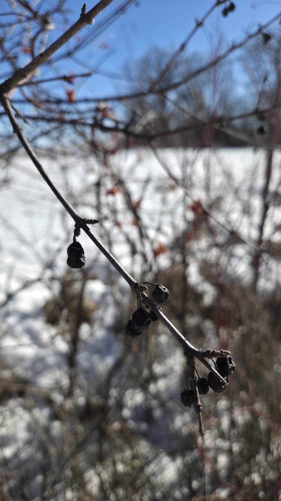
W2C-PH-002 · Rhamnus cathartica L.
Pages Z05-P126, Z05-P60 · Record Research-grade iNaturalist observation photograph via GBIF (community-verified identification; observation, not a voucher)
Visible Winter twig with clusters of smooth, dark, single-skinned berries against snow; leaves absent; thorn and bud arrangement not resolved at this distance.
Missing views Leaves, terminal thorn and buds in close-up, sectioned fruit, paired Rubus or Prunus comparison, scale, specialist verification.
Rights CC0 1.0 (https://creativecommons.org/publicdomain/zero/1.0/); rights holder: Carter Ertel. Media licence read from the GBIF occurrence media record; observation photographer named as rights holder.
Source provider record · GBIF occurrence · original 7cbcb8699e99
Diagnostic qualification WITHHELD · expert validation PENDING · consumption WITHHELD_HOLD
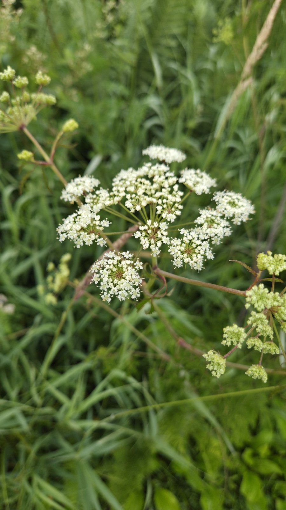
W2C-PH-003 · Cicuta maculata L.
Pages Z05-P38, Z05-P94 · Record Research-grade iNaturalist observation photograph via GBIF (community-verified identification; observation, not a voucher)
Visible Flat-topped compound umbels of small white flowers in tall grass; stem, leaves and root not shown in detail.
Missing views Stem and leaf close-ups (vein endings), chambered rootstock, lookalike pairs (Queen Anne's lace, poison hemlock), scale and botanist verification. White umbels alone do not separate Apiaceae species.
Rights CC0 1.0 (https://creativecommons.org/publicdomain/zero/1.0/); rights holder: Carter Ertel. Media licence read from the GBIF occurrence media record; observation photographer named as rights holder.
Source provider record · GBIF occurrence · original 31c350f68ca7
Diagnostic qualification WITHHELD · expert validation PENDING · consumption WITHHELD_HOLD
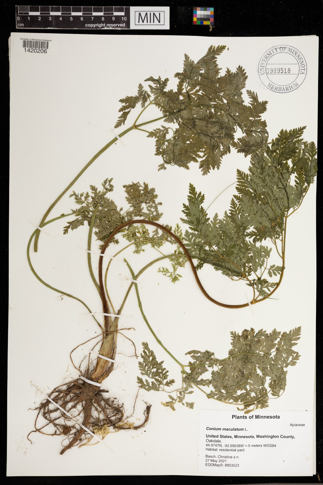
W2C-PH-004 · Conium maculatum L.
Pages Z05-P38, Z05-P94 · Record Herbarium voucher image (preserved specimen) via GBIF and the Bell Museum
Visible Full herbarium sheet: whole plant with finely divided, fern-like leaves, long stems and root; label reads Plants of Minnesota, Apiaceae, Conium maculatum L., Washington County, Oakdale, 27 May 2021, Basch s.n.; centimetre scale and colour chart in frame.
Missing views Purple stem spotting is not resolved on the pressed stem; no flowers or fruit on this sheet; living-habitat view and lookalike pairs needed.
Rights CC0 1.0 (https://creativecommons.org/publicdomain/zero/1.0/); rights holder: Bell Museum plants. Bell Atlas record states CC0 1.0, rights holder Bell Museum, University of Minnesota, and asks users to follow the Bell Museum collections policy; the imaging card in the photograph reads "copyright reserved". Confirm with the collections manager before publication.
Source provider record · GBIF occurrence · original 79a8331a2e55
Diagnostic qualification WITHHELD · expert validation PENDING · consumption WITHHELD_HOLD
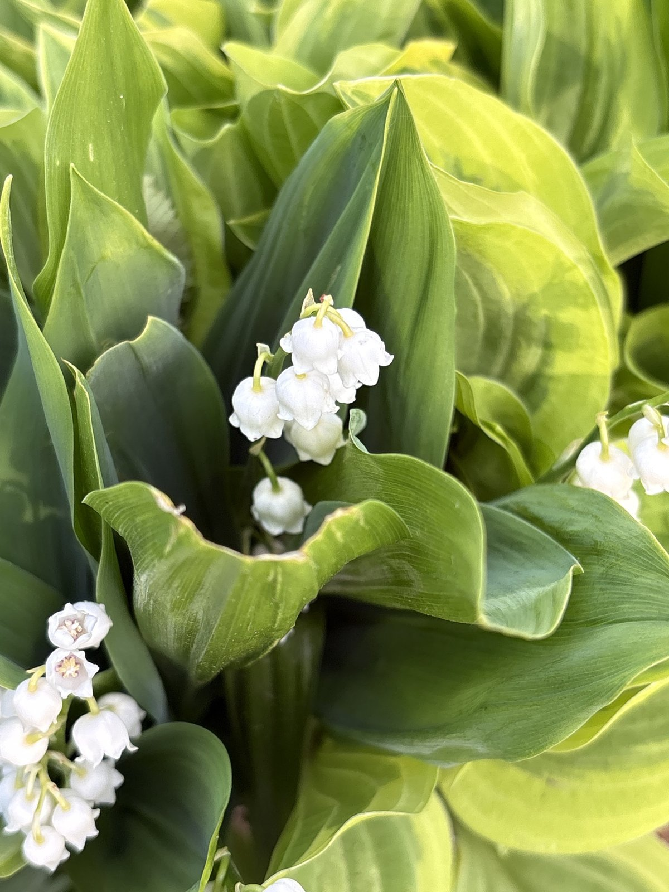
W2C-PH-005 · Convallaria majalis L.
Pages Z05-P132 · Record Research-grade iNaturalist observation photograph via GBIF (community-verified identification; observation, not a voucher)
Visible Broad, parallel-veined leaves with racemes of nodding white bell-shaped flowers.
Missing views Veratrum viride pair: GBIF lists no Minnesota occurrences of V. viride under any licence (checked 2026-11-25), so the regional relevance of this lookalike pairing needs botanist review; rhizome and leaf-base views, scale, botanist verification.
Rights CC BY 4.0 (https://creativecommons.org/licenses/by/4.0/); credit: Bob. Media licence read from the GBIF occurrence media record; observation photographer named as rights holder.
Source provider record · GBIF occurrence · original e3806df9847b
Diagnostic qualification WITHHELD · expert validation PENDING · consumption WITHHELD_HOLD
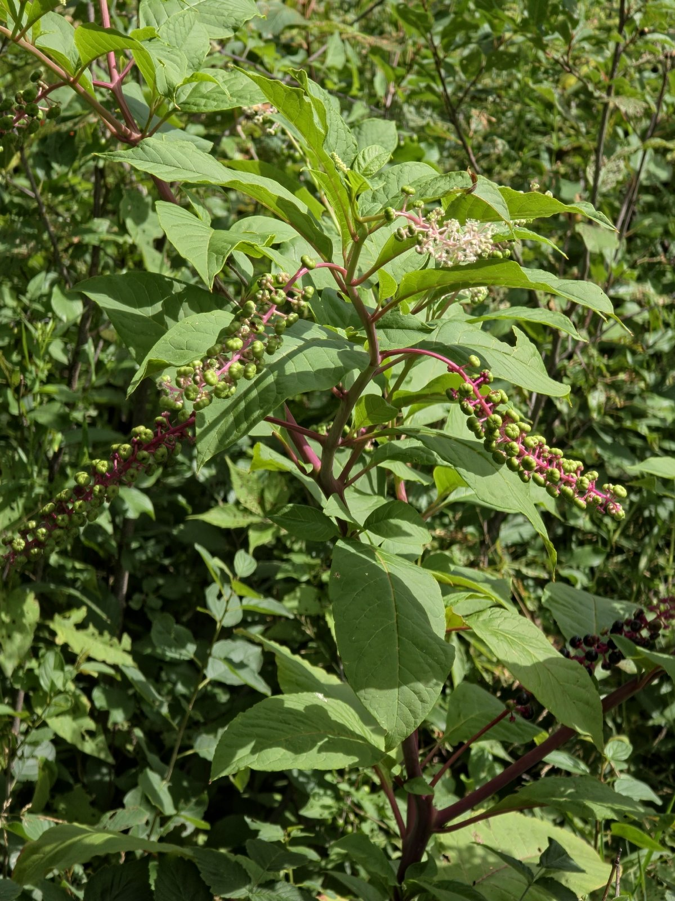
W2C-PH-006 · Phytolacca americana L.
Pages Z05-P125 · Record Research-grade iNaturalist observation photograph via GBIF (community-verified identification; observation, not a voucher)
Visible Plant with long racemes of green-to-ripening berries on reddish-magenta stems among large ovate leaves.
Missing views Ripe dark berry cluster close-up, root, scale and botanist verification; voucher leads in the register remain separate.
Rights CC BY 4.0 (https://creativecommons.org/licenses/by/4.0/); credit: Steven J. Røste. Media licence read from the GBIF occurrence media record; observation photographer named as rights holder.
Source provider record · GBIF occurrence · original 4e9ea096cf68
Diagnostic qualification WITHHELD · expert validation PENDING · consumption WITHHELD_HOLD
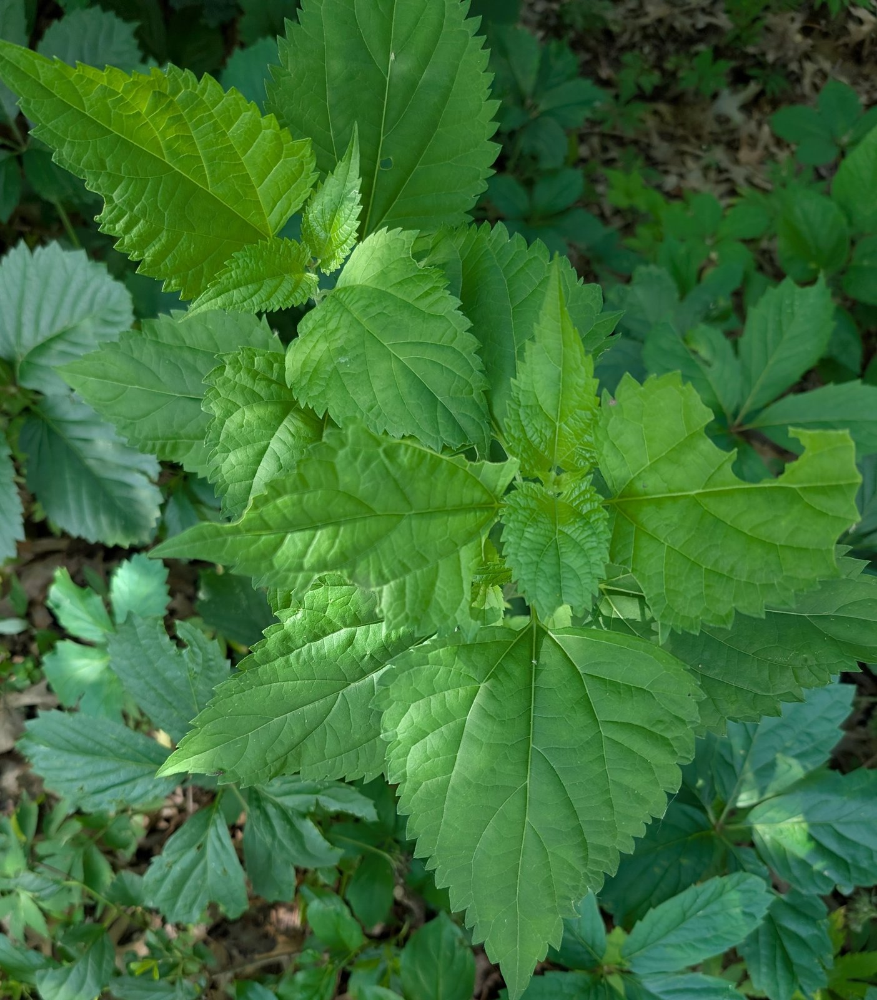
W2C-PH-007 · Ageratina altissima (L.) R.M.King & H.Rob.
Pages Z05-P125 · Record Research-grade iNaturalist observation photograph via GBIF (community-verified identification; observation, not a voucher)
Visible Leafy stems with opposite, ovate, sharply toothed leaves; no flowers at this date.
Missing views Flowering heads, stem and leaf-attachment close-up, scale and botanist verification.
Rights CC BY 4.0 (https://creativecommons.org/licenses/by/4.0/); credit: Marilynn Miller. Media licence read from the GBIF occurrence media record; observation photographer named as rights holder.
Source provider record · GBIF occurrence · original 88ef664e2493
Diagnostic qualification WITHHELD · expert validation PENDING · consumption WITHHELD_HOLD
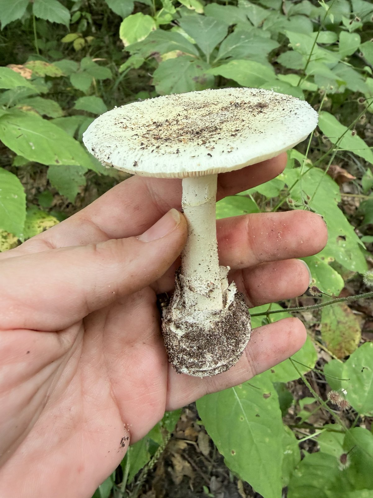
W2C-PH-008 · Amanita bisporigera G.F.Atk.
Pages Z05-P105 · Record Research-grade iNaturalist observation photograph via GBIF (community-verified identification; observation, not a voucher)
Visible Whole white mushroom held in hand: white cap, white stipe with remnant ring, and a swollen base with soil; not sectioned.
Missing views Egg-stage button in vertical section, gill view, cup-like volva intact, puffball and earthball sections, metric scale and mycologist verification.
Rights CC BY 4.0 (https://creativecommons.org/licenses/by/4.0/); credit: Erica Tava Johnson. Media licence read from the GBIF occurrence media record; observation photographer named as rights holder.
Source provider record · GBIF occurrence · original 06aff7f8e9fb
Diagnostic qualification WITHHELD · expert validation PENDING · consumption WITHHELD_HOLD
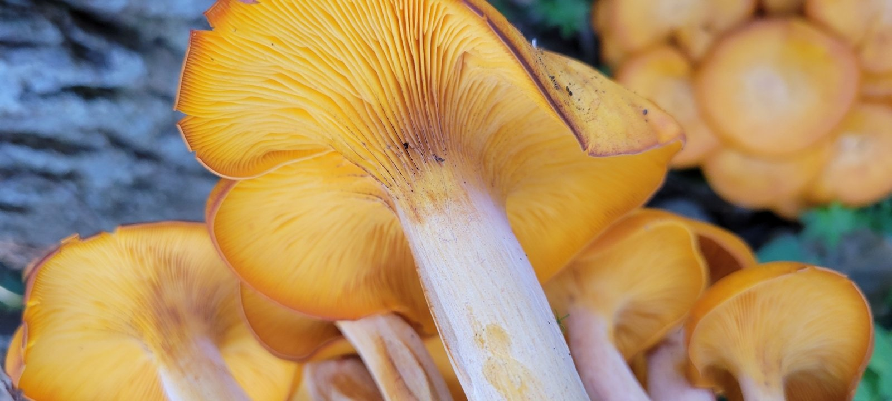
W2C-PH-009 · Omphalotus illudens (Schwein.) Bresinsky & Besl
Pages Z05-P120 · Record Research-grade iNaturalist observation photograph via GBIF (community-verified identification; observation, not a voucher)
Visible Underside of a dense cluster of orange caps beside a grey log: crowded, sharp-edged true gills running down pale orange-white stems; no scale.
Missing views Cut flesh, spore print, attachment to wood or buried roots, millimetre scale and mycologist verification.
Rights CC0 1.0 (https://creativecommons.org/publicdomain/zero/1.0/). Media licence read from the GBIF occurrence media record for this exact photograph; the observation record licence can differ.
Source provider record · GBIF occurrence · original 68f7d6a03b97
Diagnostic qualification WITHHELD · expert validation PENDING · consumption WITHHELD_HOLD
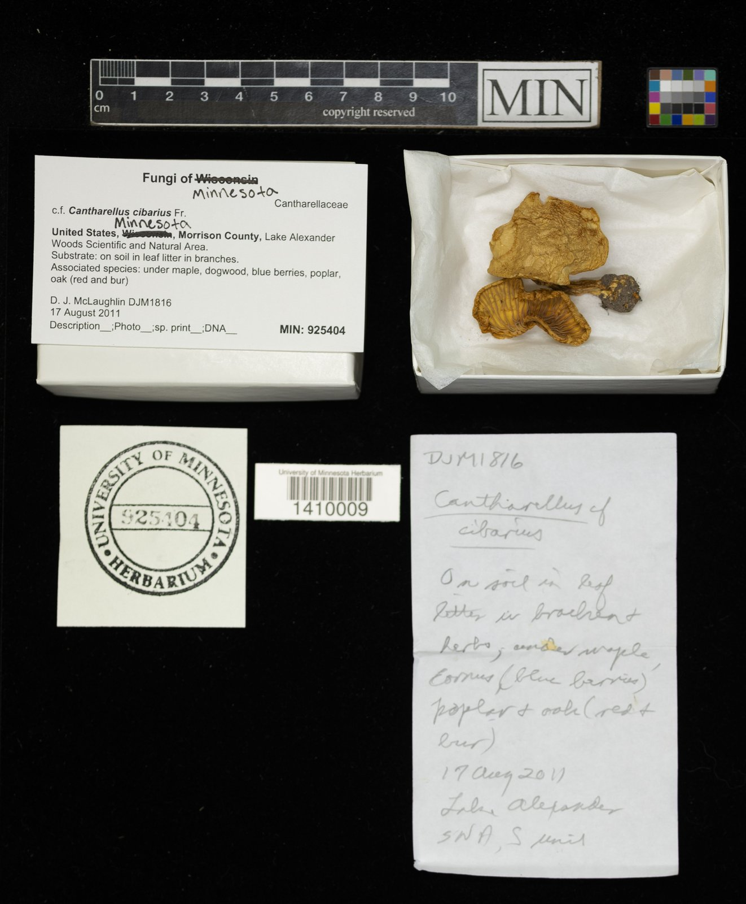
W2C-PH-010 · Cantharellus cf. cibarius Fr. (label determination, tentative)
Pages Z05-P101 · Record University of Minnesota Bell Museum fungarium voucher (preserved specimen) via GBIF
Visible Dried specimen in its packet beside a 0 to 10 cm scale and colour chart: a wrinkled dried cap, an upturned fruiting body whose underside shows blunt, forked, vein-like ridges running toward the stem, and a stem with soil at its base; the label reads c.f. Cantharellus cibarius.
Missing views Fresh colour, habitat in situ, a current determination (the label determination is tentative, c.f.) and mycologist verification.
Rights CC0 1.0 (https://creativecommons.org/publicdomain/zero/1.0/). Bell Atlas media record and GBIF state CC0, but the imaging card in the photograph reads "copyright reserved"; confirm with the Bell Museum before publication.
Source provider record · GBIF occurrence · original c6b2d8aca5c3
Diagnostic qualification WITHHELD · expert validation PENDING · consumption WITHHELD_HOLD
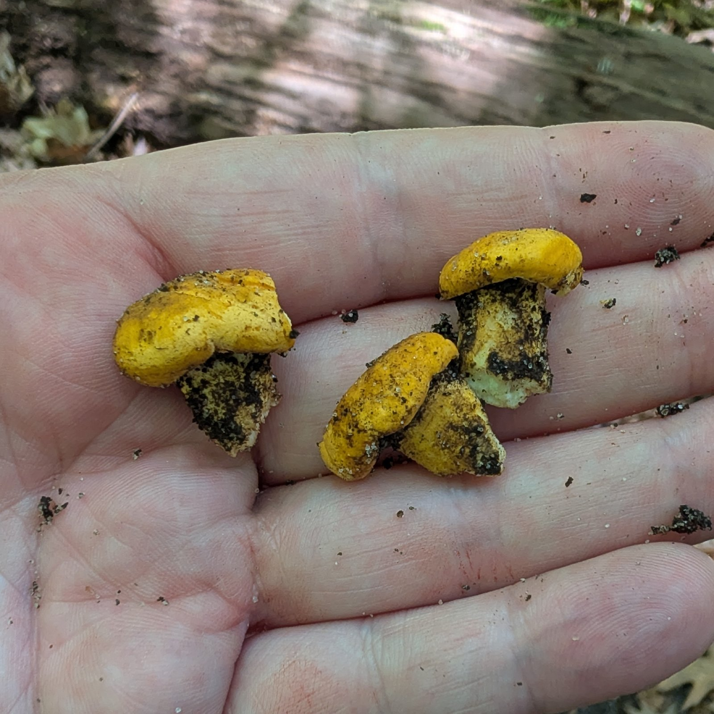
W2C-PH-011 · Cantharellus phasmatis Foltz & T.J.Volk
Pages Z05-P101 · Record Research-grade iNaturalist observation photograph via GBIF (community-verified identification; observation, not a voucher)
Visible Three small yellow-orange fruiting bodies held in a palm, caps seen from above with soil-caked stem bases; the underside ridges are not visible; the hand gives only a rough size.
Missing views Underside ridge view, cut flesh, habitat in situ, millimetre scale and mycologist verification.
Rights CC0 1.0 (https://creativecommons.org/publicdomain/zero/1.0/). Media licence read from the GBIF occurrence media record for this exact photograph; the observation record licence can differ.
Source provider record · GBIF occurrence · original e49a799a3953
Diagnostic qualification WITHHELD · expert validation PENDING · consumption WITHHELD_HOLD
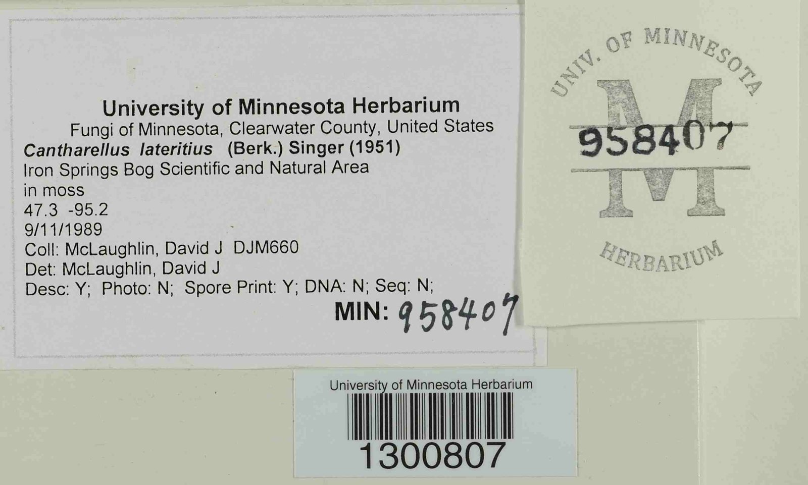
W2C-PH-012 · Cantharellus lateritius (Berk.) Singer
Pages Z05-P101 · Record University of Minnesota Bell Museum fungarium voucher (preserved specimen) via GBIF
Visible Herbarium label and accession stamp only (Cantharellus lateritius, Clearwater County, Iron Springs Bog SNA, in moss, 11 Sept 1989); no fungus is visible.
Missing views Any image of the specimen itself, fresh views and mycologist verification.
Rights CC0 1.0 (https://creativecommons.org/publicdomain/zero/1.0/). Bell Atlas media record and GBIF state CC0, but the imaging card in the photograph reads "copyright reserved"; confirm with the Bell Museum before publication.
Source provider record · GBIF occurrence · original 155a524434b6
Diagnostic qualification WITHHELD · expert validation PENDING · consumption WITHHELD_HOLD
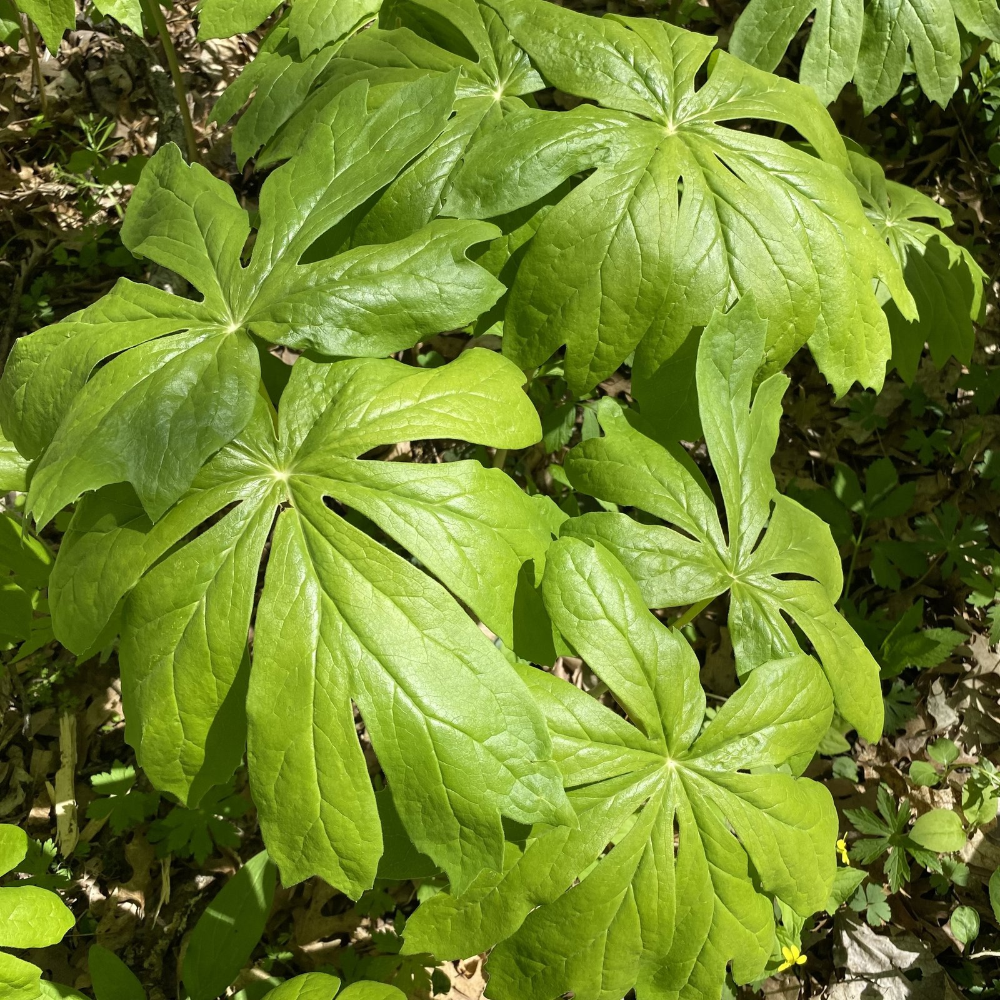
W2C-PH-013 · Podophyllum peltatum L.
Pages Z05-P71 · Record Research-grade iNaturalist observation photograph via GBIF (community-verified identification; observation, not a voucher)
Visible A colony of large umbrella-like leaves, each deeply palmately lobed and attached at its centre to a single stalk, seen from above; no flower or fruit visible; no scale.
Missing views Flower, fruit, two-leaved fertile stem, scale and botanist verification.
Rights CC BY 4.0 (https://creativecommons.org/licenses/by/4.0/); credit: Michelle Orcutt. Media licence read from the GBIF occurrence media record for this exact photograph; the observation record licence can differ.
Source provider record · GBIF occurrence · original b3344d256c5d
Diagnostic qualification WITHHELD · expert validation PENDING · consumption WITHHELD_HOLD
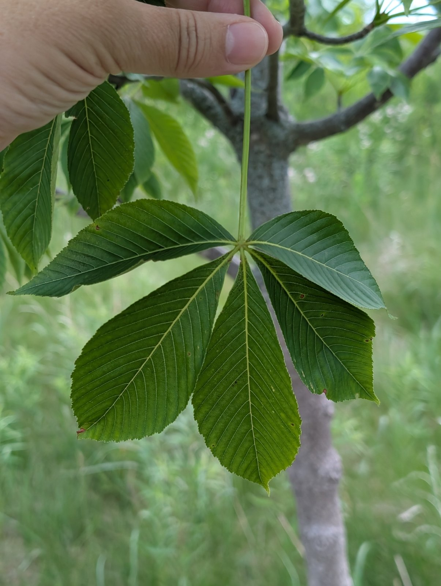
W2C-PH-014 · Aesculus glabra Willd.
Pages Z05-P81 · Record Research-grade iNaturalist observation photograph via GBIF (community-verified identification; observation, not a voucher)
Visible A hand holds a palmately compound leaf of five finely serrated leaflets radiating from one point, with a grey-barked trunk behind; no fruit, husk or seed visible.
Missing views Husk and seed, a twig showing opposite leaf arrangement, scale and botanist verification.
Rights CC0 1.0 (https://creativecommons.org/publicdomain/zero/1.0/). Media licence read from the GBIF occurrence media record for this exact photograph; the observation record licence can differ.
Source provider record · GBIF occurrence · original 33fb83e40529
Diagnostic qualification WITHHELD · expert validation PENDING · consumption WITHHELD_HOLD